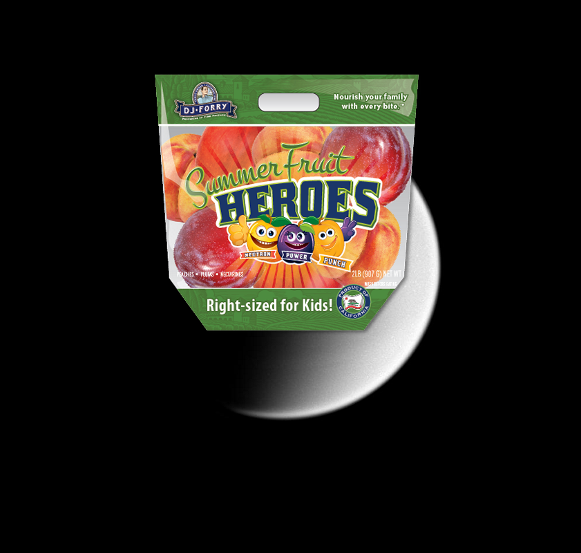

-
An Unexpected Discovery | D-Star Panorama by Opportunity!
-
A Mystery, Something Strange ; 360-degree Color Panorama
-
A Mystery on Maps of Mars Global Topography
-
A Mystery – Spirit Descent to Mars-1706.
-
Something Strange | Planetary Nebula NGC 7293 also Known as the Helix Nebula
-
A Mystery @ Pluto in Extended Color.
-
An Unexpected Discovery, A Mystery, An Unexpected Discovery ; Saturn Blue Cranium!
-
An Unexpected Discovery @ Mercury Shows Signs of Aging.
-
A Mystery on Probing Saturn Atmosphere!
-
Something Strange @ Atmospheric Motion in Jupiter Northern Hemisphere!
-
 An Unexpected Discovery ; Bright Comet ISON
An Unexpected Discovery ; Bright Comet ISON -
An Unexpected Discovery ; Orion Nebula and Bow Shock.
-
An Unexpected Discovery – Saturn Rings, Cold and Colder!
-
A Mystery, An Unexpected Discovery + Radio Occultation: Unraveling Saturn Rings!
-
An Unexpected Discovery on Mass Chart for Dead Stars and Black Holes!
-
An Unexpected Discovery, A Mystery on The Columbia Hills in Color.
-
A Mystery | Close-up of M27, the Dumbbell Nebula
-
A Mystery on Movie of Mercury South Pole!
-
An Unexpected Discovery on Crab Nebula, as Seen by Herschel and Hubble
-
A Mystery, Something Strange on Martian Color #3
-
 Something Strange ; Orion Nebula and Bow Shock.
Something Strange ; Orion Nebula and Bow Shock. -
Something Strange on Mars Under the Microscope color.
-
A Mystery, Something Strange – Saturn A-Ring!
-
 An Unexpected Discovery + A View of Saturn B-ring
An Unexpected Discovery + A View of Saturn B-ring -
Something Strange – Lava Flows and Surface Textures
-
A Mystery @ Out of the Dust, A Planet is Born Artist Concept!
-
A Mystery | Hubble View of a Galaxy Resembling an Atomic Nucleus.
-
An Unexpected Discovery – Spitzer Celebrates Fourth Anniversary with Celestial Fireworks!
-
Something Strange, A Mystery @ Saturn Layered Bands
-
A Mystery + Mini Moon.
-
 A Mystery ; The Twin Jet Nebula
A Mystery ; The Twin Jet Nebula -
A Mystery @ Rare Hubble Portrait of Io and Jupiter!
-
Something Strange, A Mystery, An Unexpected Discovery, Something Strange, An Unexpected Discovery, A Mystery, A Mystery, Something Strange, A Mystery, A Mystery + Saturn Auroras!
-
A Mystery – Flooding Mercury Surface.
-
Something Strange on Mars in Early Northern Spring!
-
Something Strange – Banded Moon!
-
??? + Mercury High-Potassium Diet.
-
A Mystery, A Mystery + In the Moon Wake.
-
Something Strange @ Infrared Rose.
-
A Mystery | Splitting the F Ring!
-
 ???, A Mystery, Something Strange @ Orion Dreamy Stars
???, A Mystery, Something Strange @ Orion Dreamy Stars -

-
 Something Strange on Comets Kick up Dust in Helix Nebula
Something Strange on Comets Kick up Dust in Helix Nebula -
Something Strange, Something Strange + Rhea Beyond the Rings.